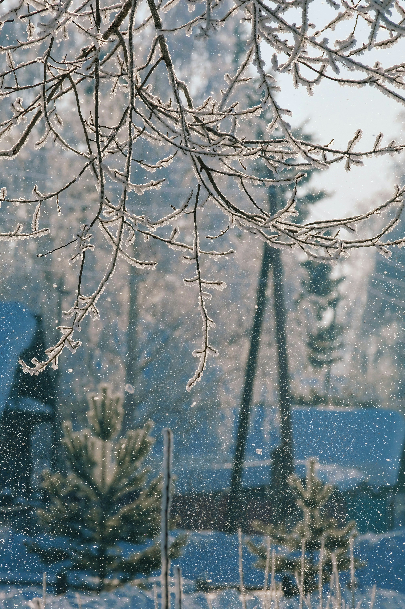
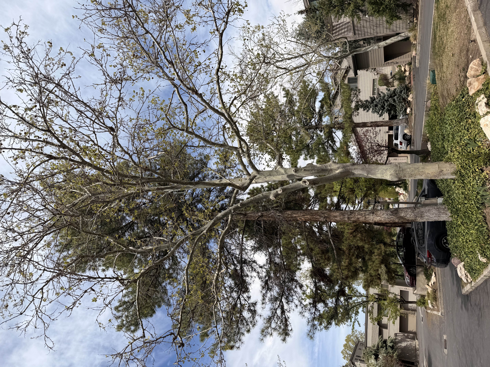
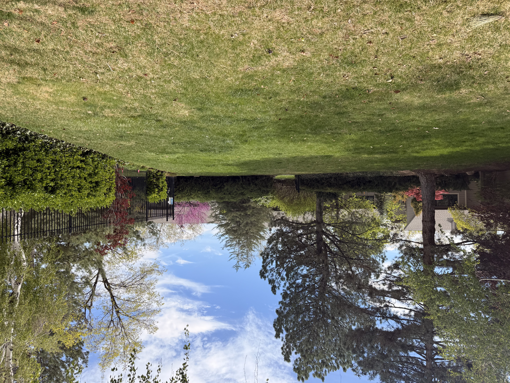
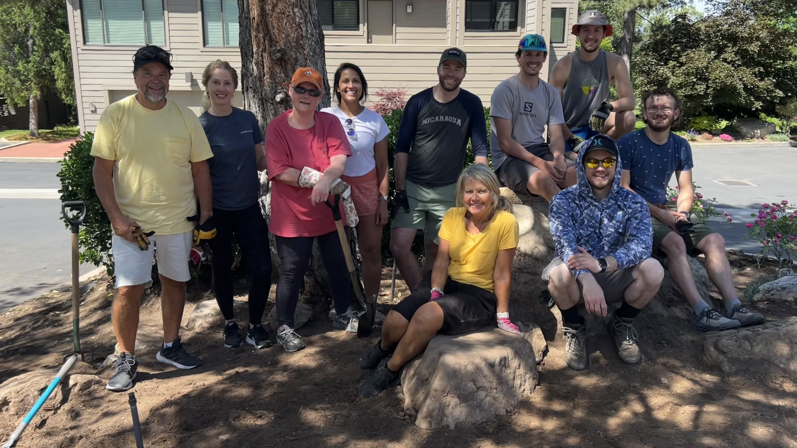

Seasonal Cleanup
Spring Cleanup
Spring cleanup is underway, and Tierra Blanca will continue this
work over the next several weeks as the seasonal landscaping
schedule ramps up. We appreciate your patience as this process
takes time across the entire community.
If you notice an area that may have been missed by mid-May, please
feel free to reach out to HOA Strategies or join a monthly Board
meeting to share your feedback.
Responsibilities
Who Maintains What
Homeowners are responsible for landscaping within their courtyards,
backyards, patios, and decks. This also includes any plants, trees,
or hardscaping that were added by current or previous homeowners.
Tierra Blanca and other vendors take care of general landscaping
throughout the community's Common Areas. This includes mowing,
trimming, seasonal cleanup, tree and shrub care, sprinkler system
monitoring, and maintenance of planter beds.
If you'd like more detail on specific boundaries, you can view the
community map in the Portal under Documents, which outlines Common
Area and Limited Common Area spaces. The Maintenance Matrix and
Tierra Blanca contract are also available there for reference.
Landscaping Contract
Winter Maintenance

Tierra Blanca's maintenance contract runs from April 1 through
October 30. From November 1 through March 31, the contract shifts
to snow removal. Because of that structure, Tierra Blanca's regular
presence on the property is very limited during the winter months.
This past winter was unusually mild, so while there may have been
opportunities for more off-season cleanup, the contract is not
currently set up that way. The Board will continue evaluating
whether future contract changes make sense if abnormal winter
weather continues.
Watering Improvements
New Sprinkler Controllers
We are beginning a multi-year project to replace our aging and
inefficient sprinkler controllers with the WeatherTRAK watering
system. This technology will help the HOA respond more effectively
to weather and soil conditions, reduce unnecessary water use, and
improve monitoring for leaks.
The first controllers will be installed this Spring, with
additional upgrades coming later.
Trees
Sycamores & New Trees

After research and discussion, the HOA will discontinue treating
the sycamores for anthracnose. Based on the information reviewed,
this disease is not expected to kill the trees quickly, and it may
take many years for a severely affected tree to decline fully. This
change will save the HOA $10,000+ annually.
Rather than removing trees preemptively, we will begin planting
replacement trees in advance. Sycamores will only be removed if
they become a maintenance nuisance or are clearly dying or dead.
Two new trees will be planted on Naniloa this year.
Summer Watering
Watering Priorities This Season

In an effort to be good stewards of both water and HOA funds,
we are working with Tierra Blanca to take a more intentional
approach to irrigation across the community this season.
As part of these conversations, we are evaluating how to
prioritize watering throughout the summer months. This likely
means not all grass will be maintained at the same level of
green. Some areas may appear less green or lightly stressed
during peak heat. This would be expected as part of a balanced,
sustainable approach to landscaping.
Our goal is to keep the community looking well-maintained
overall, while prioritizing water where it has the greatest
impact.
What to Expect
-
Some turf areas may be less green than others, especially
during hotter months
- This would be intentional and not a sign of neglect
-
Grass in lower-priority areas may go slightly dormant and
recover later in the season
-
High-use and highly visible areas are expected to remain the
primary focus
We are currently aligning with Tierra Blanca around a general
set of priority levels:
Highest Priority (Consistently Green)
- Pool area and surrounding lawn
- Main entrances and key common spaces
- High-traffic or gathering areas
Moderate Priority (Maintained, but not perfect)
- Secondary common areas (in-between units)
- Perimeter and less visible shared spaces (behind units)
Lower Priority (May go dormant during peak heat)
- Low-traffic or out-of-the-way areas
- Slopes or edges with high water demand
If you notice an area that appears to fall outside of these
general expectations, please reach out to HOA Strategies or
join a monthly Board meeting so we can take a closer look as
plans are finalized.
We appreciate your patience as we work with Tierra Blanca to
plan a thoughtful and sustainable approach to landscaping this
season.
No Touching
Irrigation Timers
Please avoid adjusting irrigation timers around the community.
Even small changes can lead to over- or under-watering, which
results in significant costs each year.
If you have concerns about watering in your area, please
contact HOA Strategies or attend a monthly Board meeting so we
can review and address it together.
Water Wise
Leaking Hose Spigots
Please take a moment to inspect your hose spigots and repair
any dripping or leaking fixtures. Even small leaks add up
quickly. Addressing them helps conserve water and reduce costs
for the community.
Landscaping Committee
Volunteering & Accomplishments

The Landscaping Committee has been actively cleaning up areas
around North and South Ichabod, and installing water-wise plants.
Their work is helping the community balance appearance,
maintenance, and long-term sustainability.
Thank you to the homeowners and volunteers who continue to
support these efforts and share feedback as we move through the
season.